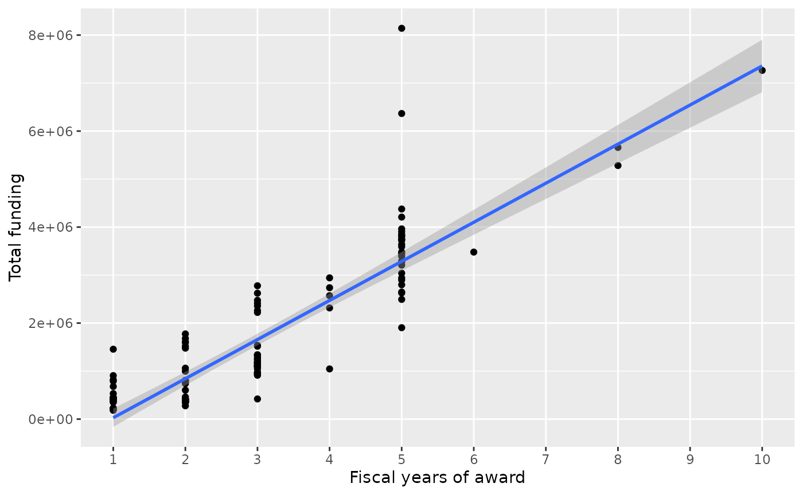
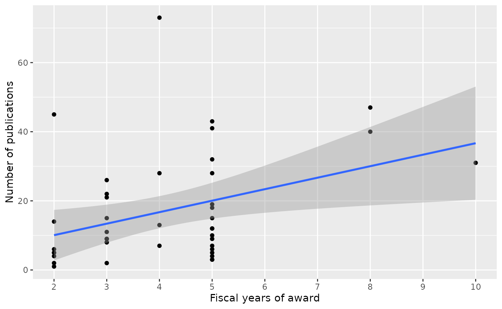
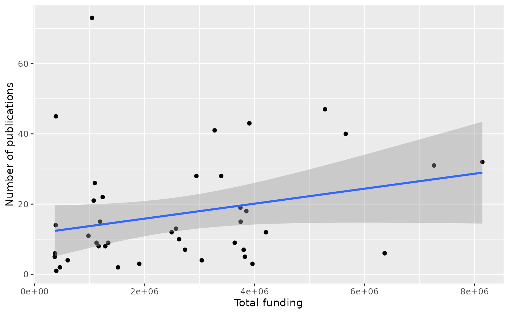
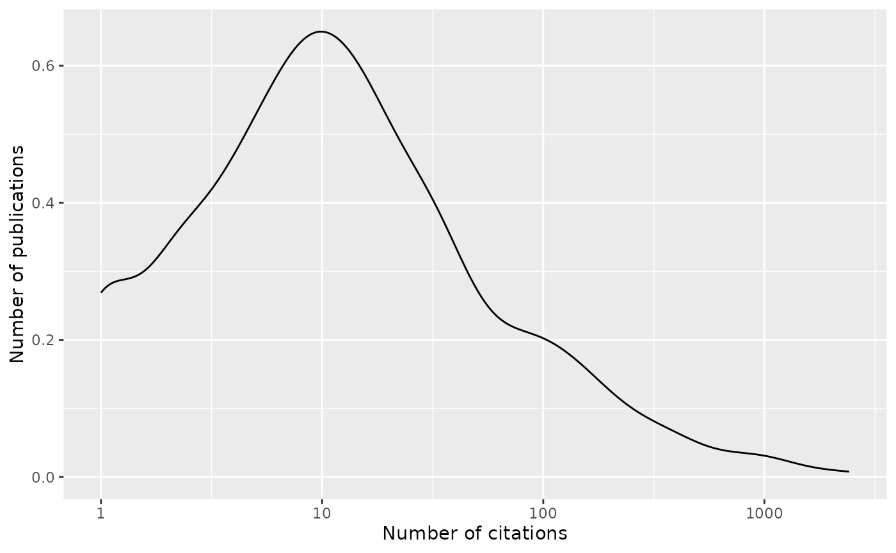

Summary
Note that this is way outside my area of expertise, so I have undoubtedly made terrible blunders.
The ‘grantpubcite’ package can be used to query the NIH Reporter database for funded grants and, optionally, publications associated with grants in NIH Reporter. The citation history of publications can discovered using iCite.
As a case study, suppose we are interested in grants funded under the Information Technology in Cancer Research (ITCR) program.
The Project information section shows that I found 87 projects (a useful sanity check?). The first figure shows that projects funded for more fiscal years received more funding (not too surprising!). At this stage and subsequently I found it useful, using the datatables on the web page, to search for ‘my’ project (U24CA180996, Cancer Genomics: Integrative and Scalable Solutions in R/Bioconductor) and compare how we were doing relative to other projects. Frankly, I did not know where we stood; now I do.
I then focused on projects receiving funding in 2020.
The Maturing projects? subsection uses project title and contact PI to ask whether projects graduate between funding activities. Three (led by Griffith, Karchin, and Liu) seem to have, all from ‘Early-stage’ to ‘Advanced’. I was a little disappointed that there were not more smaller projects maturing.
In the Publications section, we see a positive relationship between funding (amount or duration) and publication. Again this is not surprising, but speaks to the notion that scientific software projects are playing by the same rules as ‘wet lab’ projects; it would be interesting to identify a comparable wet-lab program for comparison. There are some outliers, including one project with a surprisingly large number of publications for the period of the grant, as well as projects with only a handful of publications even after multiple years of funding. The ITCR collaboration section shows that 5 projects collaborated closely enough with each other to be acknowledged in the same publication.
The figure in the Citations section shows what I imagine is a pretty typical pattern, with most publications having moderate (<100) citations, and a few having many citations. Scanning the datatable immediately below the figure indicates that the highly cited publications are biologically driven, where the paper authors have presumably cited the relevant software; the three most-cited publications are all from U24CA180922, which funds the Trinity software. When I look at the five most highly cited of ‘my’ project publications (U24CA180996), they are more modestly successful (181 to 337 citations); interestingly, 4 of the 5 publications emphasize software per se, rather than strictly biological insight.
The ITCR collaborations subsection takes a second look at collaboration, in the sense of ITCR projects citing the works of one another. 37 projects cite work of 22 other projects.
Getting started
See the Introduction to ‘grantpubcite’ article for installation, basic use, and a brief introduction to ‘tidyverse’ operations.
Load the library and other packages to be used in this article.
Project information
The relevant funding opportunity announcements (FOA) are summarized
in a tibble (the ‘tidy’ version of
data.frame)
foas <- tribble(
~full_foa, ~reissue_of, ~foa_tag, ~description,
## current FOAs
"PAR-15-331", "PAR-13-294", "Advanced", "Advanced Development of Informatics Technologies for Cancer Research and Management (U24)",
"PAR-15-332", "PAR-12-288", "Early-Stage", "Early-Stage Development of Informatics Technologies for Cancer Research and Management (U01)",
"PAR-15-333", NA, "Sustained", "Sustained Support for Informatics Resources for Cancer Research and Management (U24)",
"PAR-15-334", NA, "Innovative", "Development of Innovative Informatics Methods and Algorithms for Cancer Research and Management (R21)",
## earlier FOAs
"PAR-13-294", "PAR-12-287", "Advanced", "Advanced Development of Informatics Technology (U24)",
"PAR-12-287", NA, "Advanced", "Advanced Development of Informatics Technology (U24)",
"PAR-12-288", NA, "Early-Stage", "Early-Stage Development of Informatics Technology (U01)"
## FIXME: add 'Revsion of...' FOAs
)
foas <- select(foas, -reissue_of) # drop 'reissue_of' for clarityThe NIH Reporter contains quite a bit of information about each
grant. Following the Get
started article, we query the reporter_projects()
endpoint, restricting fields included in the return value to a few of
particular interest.
include_fields <- c(
"full_foa",
"core_project_num",
"fiscal_year",
"award_amount",
"contact_pi_name",
"project_title"
)Retrieve these fields for all projects in NIH reporter associated with the funding announcements of interest. Perform some minor data cleaning by removing leading and trailing whitespace from contact PI names
projects <-
reporter_projects(
foa = foas$full_foa,
include_fields = include_fields
) |>
mutate(contact_pi_name = trimws(contact_pi_name))The result is a tidyverse tibble, and we use ‘tidy’
semantics to explore the data. For instance, although there are 341
returned by NIH Reporter, each project is associated with funding over
multiple fiscal years and perhaps mechanisms (e.g., through
administrative supplements).
The number of projects funded by each FOA is
projects |>
left_join(foas) |>
distinct(foa_tag, core_project_num) |>
count(foa_tag)
#> Joining with `by = join_by(full_foa)`
#> # A tibble: 4 × 2
#> foa_tag n
#> <chr> <int>
#> 1 Advanced 32
#> 2 Early-Stage 29
#> 3 Innovative 21
#> 4 Sustained 5The number of projects funded per fiscal year is
projects |>
distinct(full_foa, core_project_num, fiscal_year) |>
count(fiscal_year)
#> # A tibble: 11 × 2
#> fiscal_year n
#> <int> <int>
#> 1 2013 7
#> 2 2014 17
#> 3 2015 27
#> 4 2016 38
#> 5 2017 45
#> 6 2018 51
#> 7 2019 63
#> 8 2020 42
#> 9 2021 22
#> 10 2022 10
#> 11 2023 1A few projects changed names within the same award; for convenience we create a table of most-recent project titles
project_titles_h <-
projects |>
select(fiscal_year, core_project_num, project_title) |>
arrange(desc(fiscal_year)) |>
filter(!duplicated(core_project_num)) |>
select(core_project_num, project_title)The 87 projects funded by ITCR are
datatable(project_titles_h)We update projects to use harmonized project titles.
projects <-
projects |>
select(-project_title) |>
left_join(project_titles_h, by = "core_project_num")Three project numbers have been funded under more than one FOA.
projects |>
distinct(full_foa, core_project_num) |>
count(core_project_num, sort = TRUE) |>
filter(n > 1L) |>
left_join(project_titles_h)
#> Joining with `by = join_by(core_project_num)`
#> # A tibble: 3 × 3
#> core_project_num n project_title
#> <chr> <int> <chr>
#> 1 U24CA180922 2 Trinity: Transcriptome assembly for genetic and functi…
#> 2 U24CA180996 2 Cancer Genomics: Integrative and Scalable Solutions in…
#> 3 U24CA184427 2 NDEx - the Network Data Exchange A Network Commons for…The following summarizes project funding across years; there are likely many caveats to this.
project_summaries <-
projects |>
group_by(core_project_num) |>
summarize(
n_years = length(unique(fiscal_year)),
amount = sum(award_amount)
) |>
left_join(project_titles_h, by = "core_project_num") |>
arrange(desc(n_years))
project_summaries |>
ggplot(aes(n_years, amount)) +
geom_point() + geom_smooth(method = "lm") +
scale_x_continuous(breaks = seq(1, 10), minor_breaks = NULL) +
labs(x = "Fiscal years of award", y = "Total funding")
#> `geom_smooth()` using formula = 'y ~ x'
datatable(project_summaries)Maturing projects?
A unique aspect of the ITCR FOA structure is that it envisions
projects starting at one FOA and ‘maturing’ to the next FOA, e.g., an
Early-Stage U01 matures to an Advanced U24. It
is not possible to assess this by tracking a project number through full
FOA, because the project number changes with FOA. Are there projects
with the same contact PI that have received awards from different FOA
tags?
tagged_pis <-
projects |>
distinct(full_foa, core_project_num, contact_pi_name) |>
left_join(foas, by = "full_foa") |>
select(foa_tag, contact_pi_name) |>
distinct()
maturing_pis <-
tagged_pis |>
count(contact_pi_name, sort = TRUE) |>
filter(n > 1L) |>
select(-n) |>
left_join(
projects |>
distinct(full_foa, core_project_num, contact_pi_name, project_title),
multiple = "all"
) |>
left_join(foas, by = "full_foa") |>
select(contact_pi_name, project_title, foa_tag) |>
arrange(contact_pi_name, project_title, foa_tag)
#> Joining with `by = join_by(contact_pi_name)`
DT::datatable(maturing_pis)Direct inspection suggests that three contact PIs (Giffith, Karchin, Liu) have each seen one project mature. All are from ‘Early-stage’ to ‘Advanced’.
Publications
Grantees report publications associated with their grants, and this information can be retrieved from NIH reporter. Queries are formulated in a way similar to projects, as described on the NIH Reporter publication search API, a rich set of query criteria can be used, but fields included in the return are strictly limited.
Projects funded in 2020 are
projects_2020 <-
projects |>
filter(fiscal_year == "2020") |>
left_join(project_summaries) |>
distinct(
full_foa, core_project_num,
n_years, amount, project_title
)
#> Joining with `by = join_by(core_project_num, project_title)`There are 42 projects receiving funds in fiscal year 2020. Publications associated with these projects are obtained with
publications <- reporter_publications(
core_project_nums = pull(projects_2020, "core_project_num")
) |>
select(-applid) # we won't use 'applid'There are 704 distinct publications (not all published in 2020).
Project publication and funding
The most prolific projects are
publications_by_project <-
publications |>
count(coreproject, sort = TRUE) |>
left_join(
projects_2020,
by = c(coreproject = "core_project_num"),
multiple = "last"
)
datatable(publications_by_project)An exceptional number of publications are reported by project number ‘U01CA239055’. The relationship between publication and funding period and amount are visualized as follows.
publications_by_project |>
ggplot(aes(n_years, n)) +
geom_point() + geom_smooth(method = "lm") +
scale_x_continuous(breaks = seq(1, 10), minor_breaks = NULL) +
labs(x = "Fiscal years of award", y = "Number of publications")
#> `geom_smooth()` using formula = 'y ~ x'
publications_by_project |>
ggplot(aes(amount, n)) +
geom_point() + geom_smooth(method = "lm") +
labs(x = "Total funding", y = "Number of publications")
#> `geom_smooth()` using formula = 'y ~ x'
ITCR collaboration
ITCR emphasizes collaboration between funded projects. Are there
examples of collaboration at the level of publication, i.e.,
pmid associated with more than one project number?
collaborative_pmid <-
publications |>
count(pmid, sort = TRUE, name = "n_collab") |>
filter(n_collab > 1)
collaborative_pmid
#> # A tibble: 14 × 2
#> pmid n_collab
#> <int> <int>
#> 1 35072136 3
#> 2 29533785 2
#> 3 30930166 2
#> 4 31238109 2
#> 5 32383980 2
#> 6 33067482 2
#> 7 33119407 2
#> 8 33237278 2
#> 9 33574288 2
#> 10 33720842 2
#> 11 34514469 2
#> 12 35311178 2
#> 13 35759080 2
#> 14 35760813 2Which projects are collaborating through shared publication?
collaborative_pmid |>
left_join(publications, multiple = "all") |>
count(coreproject, sort = TRUE, name = "n_collab") |>
left_join(project_summaries, by = c(coreproject = "core_project_num")) |>
select(core_project_num = coreproject, n_collab, project_title) |>
distinct() |>
filter(n_collab > 1) |>
datatable()
#> Joining with `by = join_by(pmid)`Citations
Query iCite for all citations to the publications associated with ITCR projects funded in 2020, restricting output to include fields of interest.
include_fields <- c(
"pmid", "year", "citation_count", "relative_citation_ratio",
"year", "title", "authors", "journal", "doi"
)
citations <- icite(publications, include_fields)
citations <- left_join(publications, citations)
#> Joining with `by = join_by(pmid)`The 719 publications have 36233 total citations; 98 publications have not been cited; not surprisingly uncited publications are recent.
citations |>
group_by(year) |>
summarize(
n_projects = length(unique(coreproject)),
n_pub = n(),
n_uncite = sum(citation_count == 0L),
citn_count = sum(citation_count)
) |>
DT::datatable()Citations follow a very familiar pattern, with a few publications cited frequently.
citations |>
filter(citation_count > 0) |>
ggplot(aes(x = citation_count)) +
scale_x_log10() +
geom_density() +
xlab("Number of citations") + ylab("Number of publications")
Highly cited publications are in high-impact journals, and emphasize science-related results rather than a software tool per se – the tool has been used in an important study, and the authors of the study have acknowledged the tool.
citations |>
arrange(desc(citation_count)) |>
select(coreproject, pmid, year, citation_count, journal, title) |>
datatable()Citations per project are summarized below.
citations |>
group_by(coreproject) |>
summarize(
n_pub = n(),
n_uncite = sum(citation_count == 0L),
citn_count = sum(citation_count)
) |>
arrange(desc(citn_count)) |>
left_join(project_summaries, by = c(coreproject = "core_project_num")) |>
datatable()ITCR collaborations
An opportunity for (indirect) collaboration occurs when one project cites the work of another project. Thus we query iCite for the publications that cited ITCR publications, and exclude publications that are not themselves ITCR publications.
include_fields <- c("pmid", "cited_by")
cited_by <- icite(publications, include_fields)
## 'cited_by' is a space-delimited character vector of pmid ids; expand these...
cited_by_pmids <-
pull(cited_by, "cited_by") |>
lapply(strsplit, "[[:blank:]]") |>
unlist(recursive = FALSE)
## ...construct a tibble of pmid / cited_by pmid
pmid_cited_by_itcr <-
tibble(
pmid = rep(pull(cited_by, "pmid"), lengths(cited_by_pmids)),
cited_by = unlist(cited_by_pmids) |> as.integer()
) |>
## and exclude citations by non-ITCR publications
filter(cited_by %in% pmid)There are 840 citations of ITCR publications by ITCR projects.
core_project_citations <-
pmid_cited_by_itcr |>
## map pmid to coreproject
left_join(publications, multiple = "all") |>
rename(core_project_num = coreproject) |>
## map cited_by to coreproject
left_join(
publications,
by = c(cited_by = "pmid"),
multiple = "all"
) |>
rename(cited_by_core_project = coreproject)
#> Joining with `by = join_by(pmid)`The following summarizes citations at the project level
project_project_citations <-
core_project_citations |>
count(core_project_num, cited_by = cited_by_core_project, name = "n_citns")Self-citations are
project_project_citations |>
filter(core_project_num == cited_by) |>
arrange(desc(n_citns)) |>
left_join(project_summaries) |>
select(-cited_by) |>
rename(self_citn = "n_citns") |>
datatable()
#> Joining with `by = join_by(core_project_num)`One can view collaboration as the number of projects that cite a particular project…
project_project_citations |>
filter(core_project_num != cited_by) |>
group_by(core_project_num) |>
summarize(n_collaborators = length(unique(cited_by))) |>
arrange(desc(n_collaborators)) |>
left_join(project_titles_h) |>
datatable()
#> Joining with `by = join_by(core_project_num)`…or the number of projects a project cites
All ITCR publications and citations
As a resource, it is useful to extract all publications from all grants
all_publications <- reporter_publications(
core_project_nums = pull(projects, "core_project_num") |> unique()
) |>
mutate(pmid = as.integer(pmid)) |>
select(-applid) # we won't use 'applid'There are 1800 project / publication combinations from 87 projects and 1563 publications.
iCite extended citation measures for these publications are
include_fields <- c(
"pmid", "year",
"citation_count", "citations_per_year", "expected_citations_per_year",
"field_citation_rate", "relative_citation_ratio", "nih_percentile",
"year", "title", "authors", "journal", "doi"
)
all_citations <-
icite(all_publications, include_fields = include_fields) |>
mutate(pmid = as.integer(pmid))The project citation data, including download link are:
all_publications |>
left_join(all_citations, by = "pmid", multiple = "all") |>
## put many-authored publications at the end, to make the display
## of the first few pages not too terrible -- a hack for visual
## effect
arrange(nchar(authors)) |>
DT::datatable(
extensions = "Buttons",
options = list(
scrollX = TRUE,
pageLength = 5,
dom = 'Bftp',
buttons = c('copy', 'csv', 'excel')
)
)Session information
sessionInfo()
#> R version 4.2.2 (2022-10-31)
#> Platform: x86_64-pc-linux-gnu (64-bit)
#> Running under: Ubuntu 22.04.2 LTS
#>
#> Matrix products: default
#> BLAS: /usr/lib/x86_64-linux-gnu/openblas-pthread/libblas.so.3
#> LAPACK: /usr/lib/x86_64-linux-gnu/openblas-pthread/libopenblasp-r0.3.20.so
#>
#> locale:
#> [1] LC_CTYPE=C.UTF-8 LC_NUMERIC=C LC_TIME=C.UTF-8
#> [4] LC_COLLATE=C.UTF-8 LC_MONETARY=C.UTF-8 LC_MESSAGES=C.UTF-8
#> [7] LC_PAPER=C.UTF-8 LC_NAME=C LC_ADDRESS=C
#> [10] LC_TELEPHONE=C LC_MEASUREMENT=C.UTF-8 LC_IDENTIFICATION=C
#>
#> attached base packages:
#> [1] stats graphics grDevices utils datasets methods base
#>
#> other attached packages:
#> [1] DT_0.27 ggplot2_3.4.1 grantpubcite_0.0.0.9007
#> [4] dplyr_1.1.0
#>
#> loaded via a namespace (and not attached):
#> [1] lattice_0.20-45 rprojroot_2.0.3 digest_0.6.31 utf8_1.2.3
#> [5] R6_2.5.1 evaluate_0.20 httr_1.4.5 highr_0.10
#> [9] pillar_1.8.1 rlang_1.0.6 curl_5.0.0 jquerylib_0.1.4
#> [13] Matrix_1.5-1 rmarkdown_2.20 pkgdown_2.0.7 textshaping_0.3.6
#> [17] desc_1.4.2 labeling_0.4.2 splines_4.2.2 readr_2.1.4
#> [21] stringr_1.5.0 htmlwidgets_1.6.1 bit_4.0.5 munsell_0.5.0
#> [25] compiler_4.2.2 xfun_0.37 pkgconfig_2.0.3 systemfonts_1.0.4
#> [29] mgcv_1.8-41 htmltools_0.5.4 tidyselect_1.2.0 tibble_3.1.8
#> [33] fansi_1.0.4 crayon_1.5.2 tzdb_0.3.0 withr_2.5.0
#> [37] rjsoncons_1.0.0 grid_4.2.2 nlme_3.1-160 jsonlite_1.8.4
#> [41] gtable_0.3.1 lifecycle_1.0.3 magrittr_2.0.3 scales_1.2.1
#> [45] cli_3.6.0 stringi_1.7.12 vroom_1.6.1 cachem_1.0.7
#> [49] farver_2.1.1 fs_1.6.1 bslib_0.4.2 ellipsis_0.3.2
#> [53] ragg_1.2.5 generics_0.1.3 vctrs_0.5.2 tools_4.2.2
#> [57] bit64_4.0.5 glue_1.6.2 purrr_1.0.1 hms_1.1.2
#> [61] crosstalk_1.2.0 parallel_4.2.2 fastmap_1.1.1 yaml_2.3.7
#> [65] colorspace_2.1-0 memoise_2.0.1 knitr_1.42 sass_0.4.5